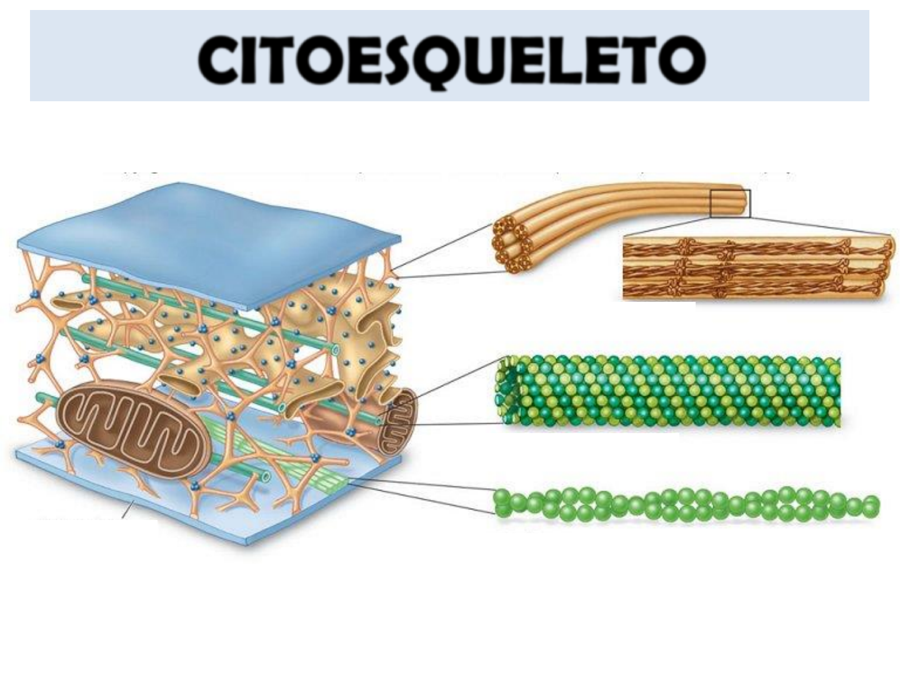

O que é o Citoesqueleto?
O citoesqueleto é uma rede complexa de fibras presentes no citoplasma das células. Ele é composto por microtúbulos, filamentos de actina (microfilamentos) e filamentos intermediários, proporcionando estrutura, forma e suporte às células.
Principais Funções do Citoesqueleto
- Manutenção da forma celular.
- Movimentação de organelas e vesículas dentro da célula.
- Facilitação da divisão celular (mitose e meiose).
- Suporte mecânico para resistir à deformação.
Componentes do Citoesqueleto
O citoesqueleto é formado por três componentes principais:
- Microtúbulos: Longas fibras ocas que formam trilhas para o transporte intracelular e desempenham papel importante na divisão celular.
- Filamentos de actina: Responsáveis por movimentos celulares, como a contração muscular e a ciclose.
- Filamentos intermediários: Proporcionam resistência mecânica, especialmente em células sujeitas a tensões.